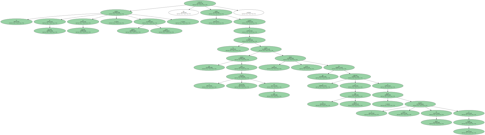
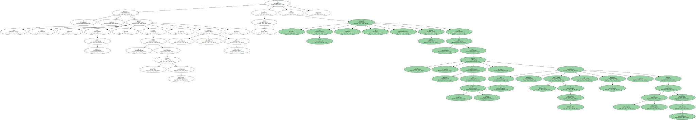
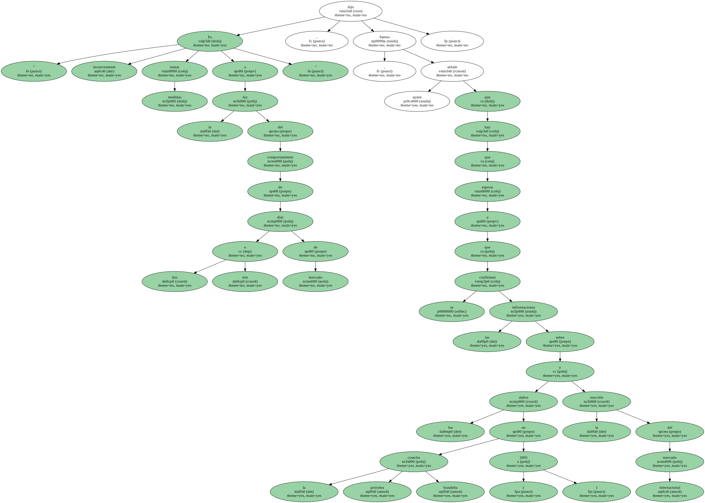
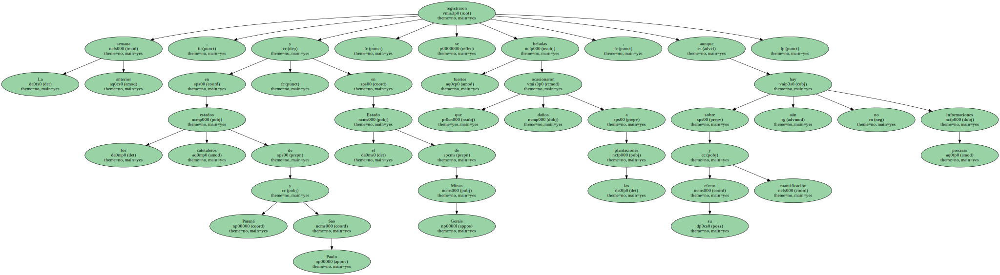
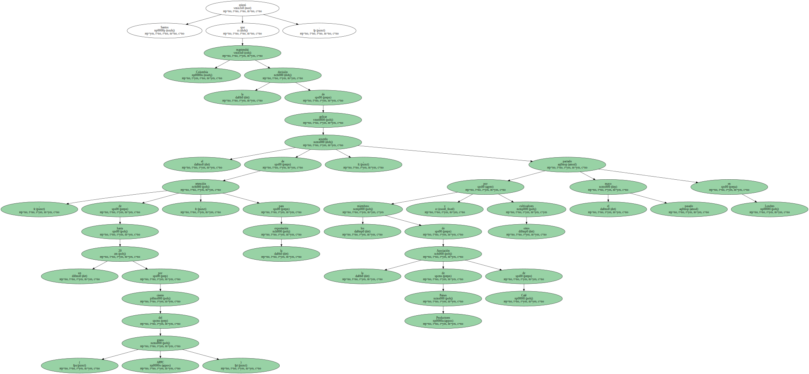
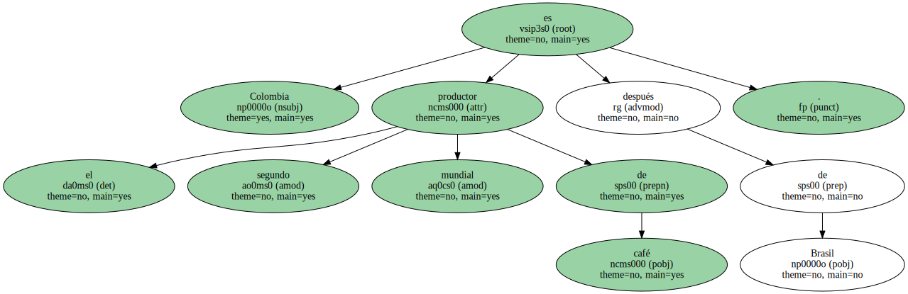
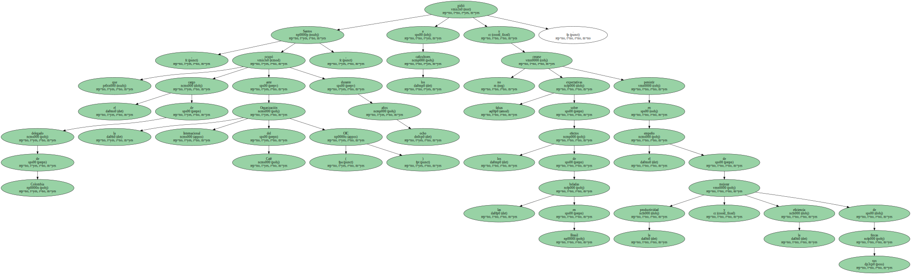
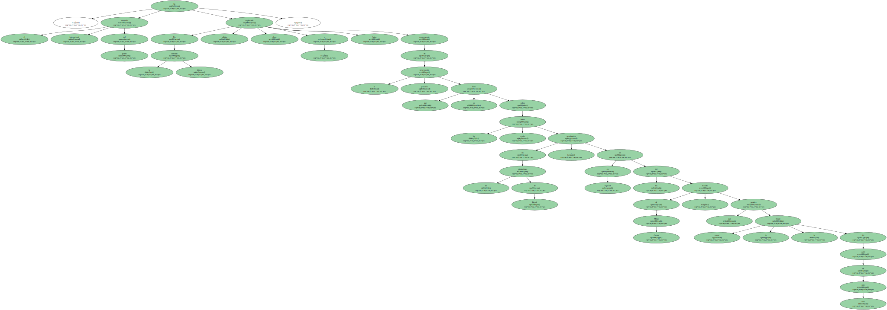
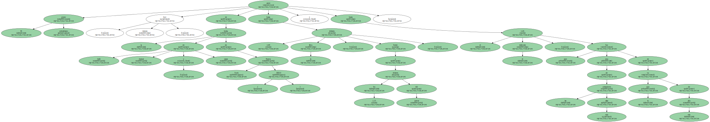
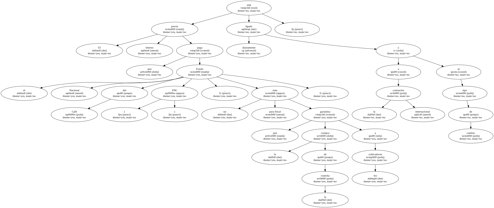

El ministro de Hacienda de Colombia , Juan Manuel Santos , manifestó hoy su cautela respecto a los efectos que puedan producir sobre el mercado internacional del café las fuertes heladas que se han registrado en los últimos días en Brasil , el mayor productor del grano en el mundo.
El ministro , que presidió hoy , por primera vez , como nuevo titular de la cartera de Hacienda , el Comité Nacional de Cafeteros , dijo a la prensa que , por ahora , no se adoptará medida alguna en el seno de ese órgano , máximo rector de la política cafetera , del que son miembros los representantes de los cultivadores y varios ministros , aunque el de Hacienda tienen posibilidad de veto.
" Es inconveniente tomar medidas a la luz del comportamiento de dos o tres días de mercado " , dijo Santos , quien señaló que hay que esperar a que se confirmen las informaciones sobre los daños en la próxima cosecha brasileña ( 2001 ) y la reacción del mercado internacional.
La semana anterior , en los estados cafetaleros de Paraná y Sao Paulo , y en el Estado de Minas Gerais , se registraron fuertes heladas que ocasionaron daños a las plantaciones , aunque sobre su efecto y cuantificación aún no hay informaciones precisas.
Santos reiteró que Colombia mantendrá la decisión de aplicar el acuerdo de retención , de hasta un 20 por ciento del grano , para la exportación , pactado por los miembros de la Asociación de Países Productores de Café ( APPC ) y otros cultivadores el pasado mayo en Londres.
Colombia es el segundo productor mundial de café después de Brasil.
Santos , que ocupó el cargo de delegado de Colombia ante la Organización Internacional del Café ( OIC ) durante ocho años , pidió a los caficultores no crearse falsas expectativas sobre los efectos de las heladas en Brasil y persistir en el empeño de mejorar la productividad y la eficiencia de sus fincas.
En la última semana , el mercado internacional del grano ha registrado súbitas alzas y bajas , consecuencia de la precaria información que se tiene sobre los daños reales ocasionados en las plantaciones de Brasil , en especial en las del Estado de Minas Gerais , que produce cerca de la mitad del café de este país.
El grano colombiano cerró hoy , viernes , en la bolsa de Café , Azúcar y cacao de Nueva York ( EEUU ) hasta 1,08 dólares la libra , frente a los 1,15 dólares del jueves , y hasta el 1,26 el miércoles , que fue una de las cotizaciones más altas en lo que va de este año.
La producción de café colombiano está calculada entre 9,5 y 10 millones de sacas de 60 kilos , en el año cafetero octubre de 1999 a septiembre de 2000 , y en cerca de 11,5 millones de sacas en el actual año civil , porque para el último trimestre de 2000 se espera un importante aumento en la producción , resultado del plan de renovación de cultivos iniciado hace varios años.

El precio interno que paga el Fondo Nacional del Café ( FNC ) , un ente para-fiscal que garantiza la compra de la cosecha a los cultivadores , está ligado diariamente a la cotización internacional y al tipo de cambio.
